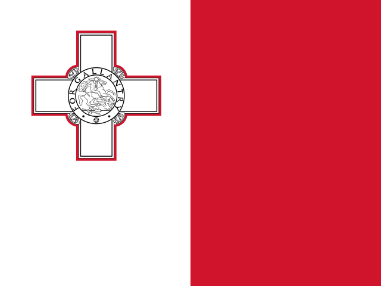

Countries › Oceania
Samoa
Where Samoa stands out
▲ MOST
1st Guyana33.8%
Guyana33.8%
2ndSamoa15.2%
3rd

Malta10.6%2nd of 188 · World Bank, World Development Indicators (WDI), 2023
▲ MOST
2ndGuyana53.2%
3rdSamoa51.5%
4th Bosnia and Herzegovina46.8%
Bosnia and Herzegovina46.8%
3rd of 193 · United Nations Department of Economic and Social Affairs (UN DESA) International Migrant Stock 2024, 2020
▲ MOST
5th Israel72.8
Israel72.8
6thSamoa72.0
7th Antigua and Barbuda67.8
Antigua and Barbuda67.8
6th of 171 · Food and Agriculture Organization (FAO) Food Balance Sheets, 2023
▲ MOST
6thCosta Rica2,926
7thSamoa2,880
8th Malaysia2,875
Malaysia2,875
7th of 179 · FAO, via World Bank, WDI, 2022
Size, sea and borders
2,780 square kilometres (km²)167th of 195
CoastlineCentral Intelligence Agency (CIA) World Factbook, 2024 edition, 2024 · web.archive.org (cia.gov)
403 kilometres (km)101st of 193
Number of land bordersGeoNames, 2026-08 · download.geonames.org
0158th of 195, tied with 37
Land and height
1,857 metres (m)126th of 194
Rainfall a yearFAO, via World Bank, WDI, 2022 · data.worldbank.org
2,880 mm7th of 179
58.3% of land34th of 192
People
216,663 people176th of 195
Population densityWorld Bank, WDI, 2023 · data.worldbank.org
77.9 people per km²106th of 192
19.9 years156th of 195
71.7 years117th of 195
Dependants per 100 people 15-64UN World Population Prospects 2024, via World Bank, WDI, 2023 · data.worldbank.org
80.022nd of 194
People living in one homeUN DESA Household Size and Composition, 2022 · un.org
6.67th of 152
Share of its people living abroadUN DESA International Migrant Stock 2024, 2020 · un.org
51.5%3rd of 193
Food, power and travel
15.2% a year2nd of 188
109 kg per person a year11th of 171
Poultry supplyFAO Food Balance Sheets, 2023 · bulks-faostat.fao.org
72.0 kg per person a year6th of 171
Fish & seafood supplyFAO Food Balance Sheets, 2023 · bulks-faostat.fao.org
46.6 kg per person a year11th of 171
177 kg per person a year11th of 171
3170th of 189, tied with 7
Football and chess
Football internationals played, all timeInternational football results (martj42), 2026 · github.com
71182nd of 193, tied with 2
Showing 20 highlights for Samoa. Rank counts from the highest value among the countries that have data: 1st is the most. Ties share a rank. Data version 91, 22 November 2026.
Sort Samoa against four others
The game has figures for Samoa on 150 of its 190 questions.
The same game for Android and iOS. It launches on 10 December 2026.
Out now.